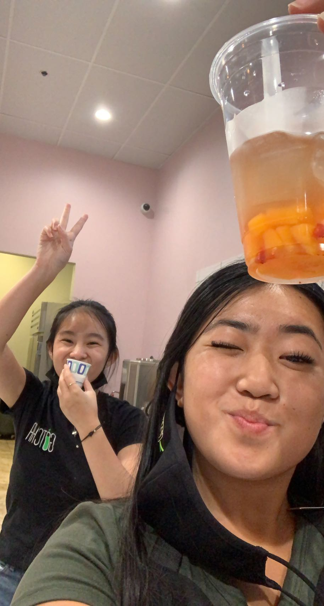
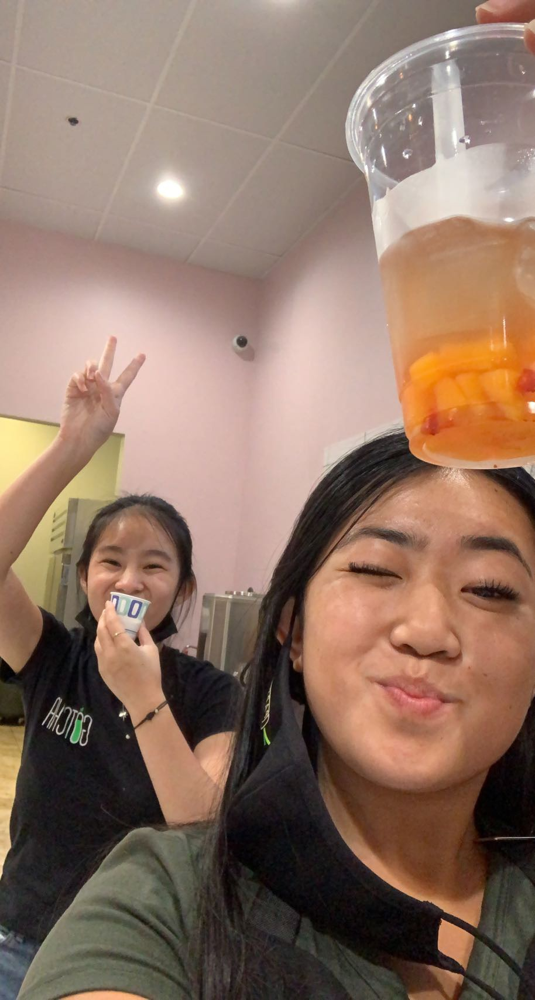
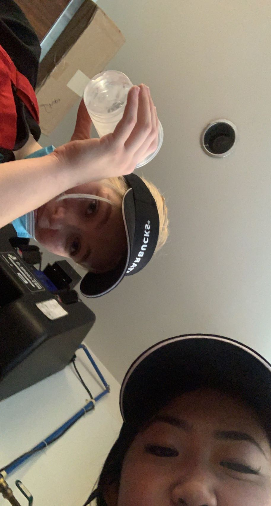
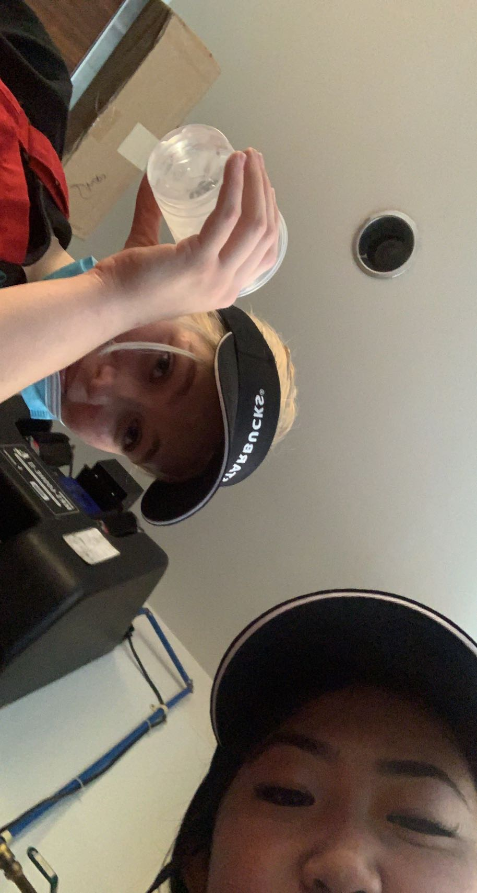
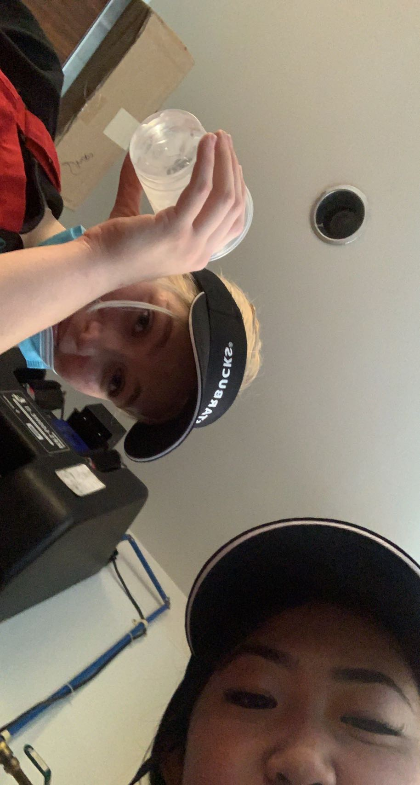

Leanne Quach
Leanne Quach is currently a first-year student who is attending the University of California, Riverside as a Pre-Business student. She has held multiple jobs over the last two years in the food industry business, such as being a barista at a boba shop and at a Starbucks, as well as worked at a quick and on-the-go restaurant called Summer Rolls in Pasadena, CA. She is currently a Starbucks barista at the University of California, Riverside location where she works about 16 hours a week on top of being a full-time student. Prior to all of her current job experience, she got her first experience working in customer service at a summer camp in the elementary school district that she went to school at. From grade 7 to 11, she would volunteer every summer to continue building her leadership skills by working with younger students in grades K-6 as well as communicate with parents and guardians about upcoming events and important announcements. As she grew older she was tasked with more responsibilities and was able to use her skills that she has learned throughout her life, such as her musical talents to teach younger children. She was given the opportunity to teach younger students how to read sheet music, how to sing in a choir with harmonies, and some choreography to go along with the songs that they were learning how to sing. From these leadership experiences she was able to get her first job during her senior year of high school as a boba barista at a boba store called “Gotcha Tea House” in Rosemead, California. Here she was able to put all of her previous customer service experience she has learned to use. At this job she learned how to communicate with customers, create long lasting relationships with her co-workers, how to time-manage between school, clubs, sports, and now work. After she graduated from high school, she decided that she wanted to challenge herself and take on two jobs during the summer before her first year of college. Right after she graduated she started looking into jobs in the same industry that she is currently working in but also different enough so that she is able to learn new skills. As a result, she started working at a restaurant that specializes in Vietnamese food, specifically banh mi and spring rolls. Here she was able to learn how to cater to different types of people and educate people about the different cuisines of the Vietnamese culture. Here she was able to learn how to handle food properly, how to get along with co-workers who are of all different age ranges, and how to communicate effectively with those who work in the front and back of the house. In addition she also learned how to effectively problem solve by helping customers and being self-sufficient in the workplace. Currently, as a college student, she was able to obtain her current job as a Starbucks barista. With her previous experience she was able to be hired on the spot during her interview and the rest is history.
Experience
Boba Barista
• Made and served on average 200 drinks per day with efficiency and consistency
• Memorized over 50 specialty recipes
• Assisted in training new employees
Server
• Made and served 200+ build-your-own spring rolls and bowls per shift with efficiency and consistency
• Maintained a constant flow of communication between workers in the kitchen and front of the store
• Constantly ensuring a clean and easily accessible environment for customers
• Organized and maintained a constant and consistent flow of service between online orders and in-person orders
• Multitasked while taking orders to ensure customers receive quick, efficient, and consistent service
Barista
• Made and served over 50+ drinks
• Constantly ensuring a clean and easily accessible environment for customers
• Multitasked while taking orders to ensure customers receive quick, efficient, and consistent service
• Constantly communicating with other baristas to ensure that service is quick and efficient
Education
Rosemead High School
University of California Riverside
Portfolio
 

 

